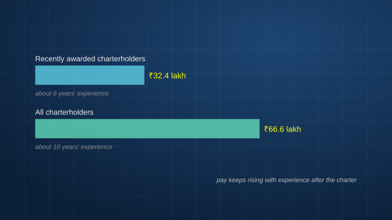
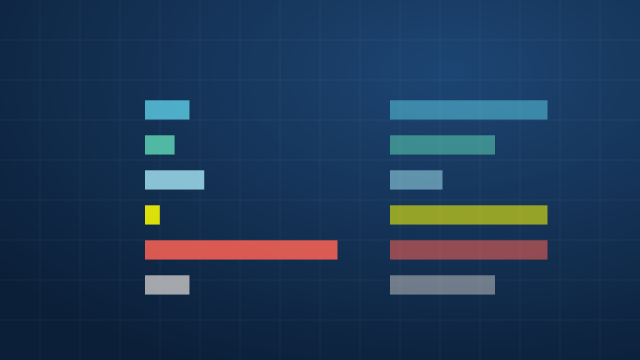
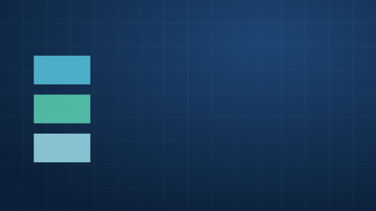
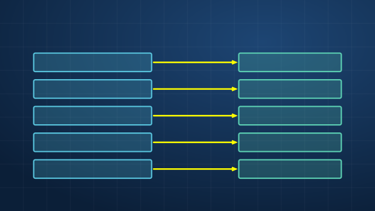

Home › Study blog
Study blogEverything CFA candidates ask, answered
Requirements, costs, salaries, how long it takes, how it compares with the FRM, MBA, CPA and ACCA, formulas and calculator settings, plus study plans, Level II vignettes, Level III written answers, ethics, mock exams and exam day. The advice draws on CFA Institute's own guidance and on what the main prep providers recommend, rewritten as one consistent method.
Most searched: the guides candidates look for most

Study blog8 min readCFA salary by country: what charterholders earn around the world
CFA pay in 19 countries, from the United States, Switzerland and Singapore to Germany, the UAE, India and Nigeria, in local currency and US dollars. What drives the gaps, why different sources disagree, and how to read any CFA salary figure.
Most searched Study blog28 min read
Study blog28 min readBA II Plus calculator guide: every function, on a calculator you can press
The complete guide to the BA II Plus for CFA candidates, built around a working replica of the calculator. Press the keys yourself or press Play and watch every keystroke: settings, clearing, TVM, amortisation, bonds, cash flows, NPV and IRR, statistics, regression and every other worksheet.
Most searchedBefore you start: requirements, cost and careers
 Study blog3 min read
Study blog3 min readCFA requirements: degree, passport, work experience and who can register
You do not need a finance degree, or even a finished degree, to start. You do need a passport, English, and either a degree in sight or enough work experience. Here is exactly when each level opens up.
Before you start Study blog2 min read
Study blog2 min readHow much does the CFA cost in total?
Exam fees alone come to USD 3,520 to 4,570 for all three levels. Add study materials and any retakes, and most candidates spend somewhere between USD 4,000 and 8,000.
Before you start Study blog3 min read
Study blog3 min readHow long does the CFA take?
The fastest possible route through all three exams is about a year, and 18 months is a more realistic fast track; most candidates take two to four years. Then you need 4,000 hours of work experience for the charter.
Before you start Study blog3 min read
Study blog3 min readIs the CFA worth it? An honest answer for 2026
For investment careers the charter is still one of the strongest signals you can earn, at a fraction of an MBA's cost. For careers outside investing, the same hours may be better spent elsewhere.
Before you start Study blog3 min read
Study blog3 min readWhy is the CFA so hard?
It is not that any one idea is impossible. It is the volume, the depth at the higher levels, studying while working, and a pass line set high enough that fewer than half of candidates clear it.
Before you startThe CFA compared
 Study blog2 min read
Study blog2 min readCFA vs FRM: which should you do?
The CFA is the broad investment credential; the FRM is the specialist risk credential. Choose by the job you want, and know that many risk professionals end up holding both.
The CFA compared Study blog2 min read
Study blog2 min readCFA vs MBA: which is right for your career?
The CFA goes deep into investments, cheaply and while you keep working. An MBA goes broad, costs far more, and buys a network and a career reset. They answer different questions.
The CFA compared
Study blog3 min readCFA vs CPA, CFP, ACCA and CA: how the finance qualifications compare
The CFA is for investment decisions; CPA, ACCA and CA are for accounting and audit; the CFP is for personal financial planning. Here is how they differ in exams, experience and careers.
The CFA comparedHow the exams work
 Study blog3 min read
Study blog3 min readCFA exam results: when they arrive and how to read them
Results come by email five to nine weeks after your exam window closes, as a simple pass or fail plus a score report. The pass mark is never published, so the report is about where you stand, not a number to hit.
How the exams work
Study blog2 min readCFA Level I vs Level II vs Level III: how the exams differ
Level I tests whether you know the tools, Level II whether you can value things with them, and Level III whether you can build and defend a portfolio for a real client.
How the exams workStrategy: how to tackle the exams
 Study blog3 min read
Study blog3 min readBuilding a 300-hour CFA study plan around a full-time job
Work backwards from exam day, protect the last six weeks for practice, and decide in advance what happens when a week goes wrong.
Strategy Study blog3 min read
Study blog3 min readHow to tackle CFA Level I
Level I rewards breadth, speed and accuracy on short questions. Cover every topic, drill the calculator, and practise at 90 seconds a question.
Strategy Study blog2 min read
Study blog2 min readTackling CFA Level II item sets
Level II questions come four to a case study. Read the questions first, read the vignette for the inputs, and never let one hard set eat the time of three easy ones.
Strategy Study blog3 min read
Study blog3 min readAnswering CFA Level III constructed-response questions
Graders reward short, specific answers that do exactly what the command word asks. How to read the question, how much to write, and how to get partial credit.
Strategy Study blog2 min read
Study blog2 min readChoosing a CFA Level III pathway
Portfolio Management, Private Markets or Private Wealth: all three lead to the same charter. Choose by the job you want and the material you already use, not by guesses about difficulty.
Strategy Study blog2 min read
Study blog2 min readHow to study CFA ethics
Ethics is 10–15% at every level and often decides close results. Learn the Standards through cases, read every word of the question, and when in doubt, disclose.
Strategy Study blog2 min read
Study blog2 min readUsing mock exams and an error log
Mocks are where marks are made. Sit them under exam conditions, then spend longer reviewing than you spent answering, and keep a log of why each mistake happened.
Strategy
Study blog3 min readChoosing CFA study materials without wasting money
What the official curriculum gives you, what prep providers add, and how to choose: start from your weakness, not from a brand.
Strategy Study blog2 min read
Study blog2 min readCFA exam day: what to bring and what to expect
Passport, approved calculator, arrive early, and expect strict security. A checklist so nothing on the day costs you marks.
Strategy Study blog2 min read
Study blog2 min readWhy first principles beats memorising for the CFA exams
Memorised formulas fade between levels and fail under a twist in the question. Ideas rebuilt from their foundations last, and they let you answer questions you have never seen.
StrategyTools: formulas, calculator and self-study
 Study blog6 min read
Study blog6 min readCFA Level I formula sheet: the formulas you actually need
About fifty formulas cover most Level I calculations. Here they are by topic, each with a one-line reminder of what it means, so you can rebuild them instead of memorising them.
Tools Study blog3 min read
Study blog3 min readCFA calculator settings: set up your BA II Plus or HP 12C
Only two calculator families are allowed in the CFA exams. Three settings on the BA II Plus prevent the most common calculator mistakes; here are the exact keystrokes.
Tools Study blog2 min read
Study blog2 min readCan you pass the CFA on your own, without coaching?
Yes. Most candidates study on their own around a job. What they need is not a classroom but a plan, enough practice questions, full mock exams and a way to get unstuck.
ToolsThe CFA Program, in facts
 CFA guide4 min read
CFA guide4 min readThe CFA Program in one page
What the CFA Program is, how the three levels fit together, what it costs, how long it takes and what you need for the charter, using CFA Institute's published facts.
CFA Program guide CFA guide3 min read
CFA guide3 min readCFA Level I: format, topics and weights for 2026 and 2027
Level I tests breadth across ten topics in 180 multiple-choice questions. Here is the format, the topic weights, and what changes for exams from February 2027.
CFA Program guide CFA guide2 min read
CFA guide2 min readCFA Level II: item sets, topics and weights
Level II is valuation, tested through 22 case studies with four questions each. The format, the weights, and why it feels harder than Level I.
CFA Program guide CFA guide3 min read
CFA guide3 min readCFA Level III: constructed response, pathways and weights
Level III mixes item sets with written answers, adds a specialised pathway worth a third of the exam, and asks you to synthesise everything for a client.
CFA Program guide CFA guide3 min read
CFA guide3 min readCFA exam dates and fees for 2027
Every 2027 exam window, the early and standard registration deadlines, the fees by level, and the deferral rule that changes in February 2027.
CFA Program guide CFA guide3 min read
CFA guide3 min readCFA pass rates, session by session
The latest pass rates for every level, the long-run averages, and the one statistic that matters most for you: first-time candidates do much better than those who defer.
CFA Program guide